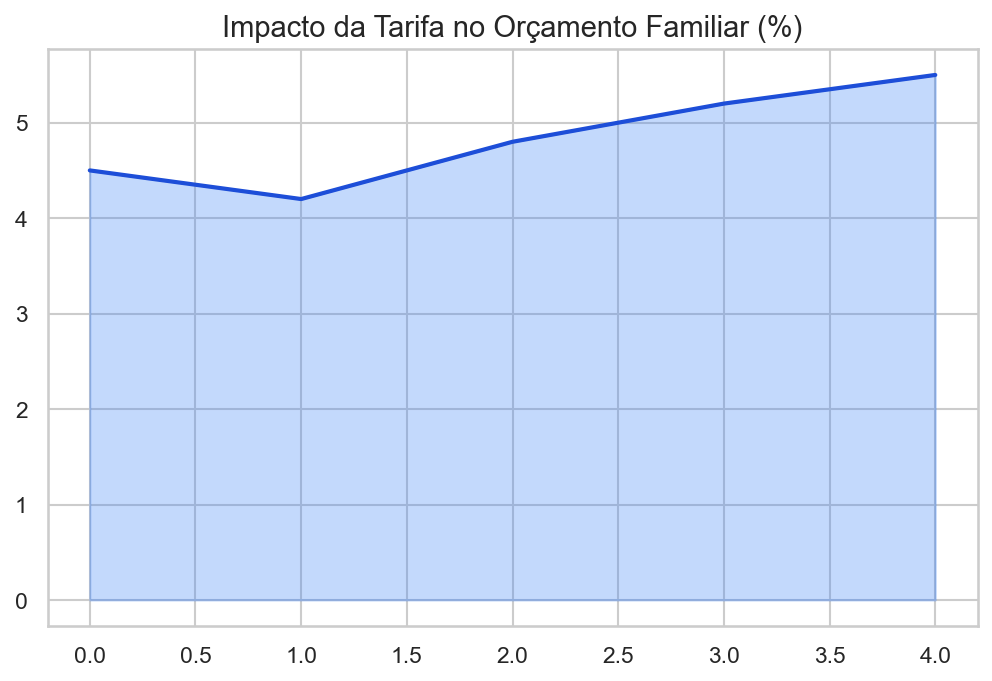

Enfrentando o abismo da exclusão territorial através da gestão e transparência.
Membros: Erilin Sabrina, Emilly Gabriely, Juarez, Flavia Arruda
Análise da renovação tecnológica e climatização como fatores de dignidade urbana.

Bairros periféricos com baixos índices de pavimentação inviabilizam o acesso ao transporte.

Identificamos a ausência de canais de prestação de contas em tempo real sobre a aplicação da verba federal.

A ausência de mecanismos de controle interno permite o risco de desvio de finalidade dos recursos destinados às periferias.
Inexistência de auditoria independente sobre a pavimentação de rotas periféricas.
O ciclo de políticas públicas encontra-se travado na fase de implementação por falta de integração multisetorial.

A ausência de participação social direta impede que as demandas reais do bairro entrem na agenda de prioridades da prefeitura.
Solução: Implementar o Orçamento Participativo Digital.
| Indicador | Realidade Local | Impacto |
|---|---|---|
| Tarifa Social | Inexistente | Exclusão Econômica |
| Vias sem Asfalto | ~65% na periferia | Impossibilita linhas |
| Conselhos Locais | Desativados | Zero Participação Social |